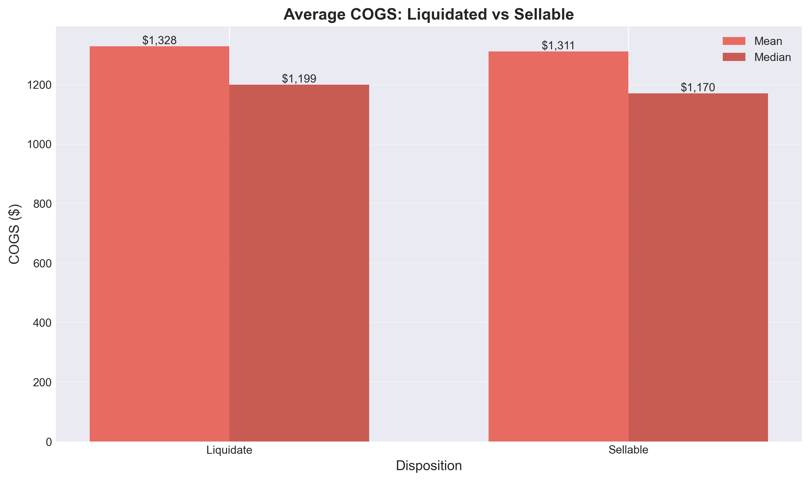
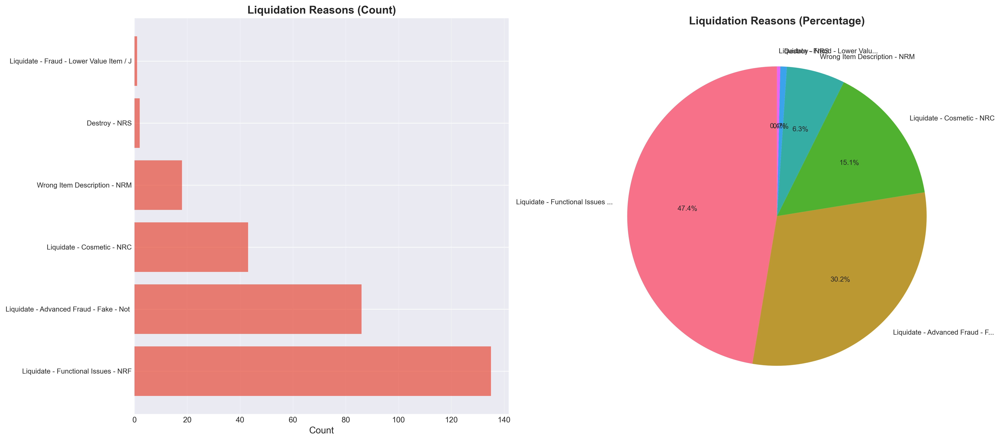
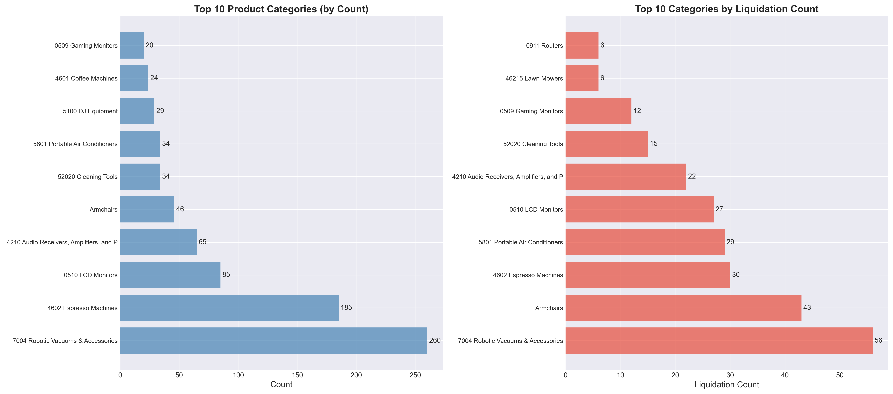

❓ Specific Questions Visualizations
Detailed Answers to 7 Key Business Questions
← Back to DashboardQuestion 1: Which Quality Checks Are Causing Liquidations?
Answer Summary
- Top Check: "Is it IOG?" - 285 failures (100% failure rate)
- Critical Check: "Does it Work?" - 162 failures (95.9% failure rate)
- Total Checks Analyzed: 44 quality checks
- Key Finding: "Does it Work?" check is the most critical functional check causing liquidations
Quality Checks Causing Liquidations

Top quality checks with highest failure counts in liquidated orders
Top Checks Causing Liquidations

Comprehensive view of checks driving liquidation decisions
Check Failure Rates Comparison

Comparison showing which checks have highest failure rates in liquidated vs sellable items
Question 2: Patterns in High COGS Items That Get Liquidated
Answer Summary
- High COGS (>= $2,000): 26.5% liquidation rate
- Lower COGS (< $2,000): 30.0% liquidation rate
- Counter-intuitive: Higher value items have lower liquidation rates
- High COGS Liquidated: 9 items totaling $24,336
- Average COGS: Liquidated ($1,328) vs Sellable ($1,311) - very similar
High COGS Patterns Analysis

Detailed analysis of high COGS items showing liquidation patterns
Liquidation Rate by COGS Bin

Liquidation rates across different COGS value ranges
COGS Distribution

Distribution comparison between liquidated and sellable items
Average COGS Comparison
Mean and median COGS comparison showing similar values
Question 3: Comparison of Passed vs Failed Checks
Answer Summary
- Liquidated Items: Avg 12.73 failed checks, 9.86 passed checks
- Sellable Items: Avg 13.59 failed checks, 8.41 passed checks
- Surprising Finding: Sellable items have MORE failed checks on average
- Key Insight: It's not about quantity of failures, but WHICH checks fail
Passed vs Failed Checks Comparison

Detailed comparison showing which checks differentiate liquidated from sellable
Check Comparison Analysis

Comprehensive check-level comparison between outcomes
Check Failure Rates Comparison
Top checks showing highest difference in failure rates
Question 4: Product Categories Most Affected
Answer Summary
- Top Category: Robotic Vacuums (56 liquidations, 35.0% rate, $63,607 lost)
- Second: Armchairs (43 liquidations, 93.5% rate, $48,695 lost)
- Third: Portable Air Conditioners (29 liquidations, 85.3% rate, $47,210 lost)
- Finding: Some categories have extremely high liquidation rates (>=80%)
- Action: Category-specific quality standards review needed
Categories Most Affected

Top categories with highest liquidation counts and rates
Liquidation Rate by Category

Top 15 categories ranked by liquidation rate
Value Lost by Category

Financial impact by category - prioritizing high-value categories
Category Liquidation Analysis

Detailed category-level liquidation analysis
Question 5: Specific Liquidation Reasons
Answer Summary
- Functional Issues: 47.4% of liquidations ($179,823 value)
- Fraud: 30.5% of liquidations ($113,627 value)
- Cosmetic: 15.1% of liquidations ($55,663 value)
- Wrong Item Description: 6.3% of liquidations ($25,753 value)
- Destroy: 0.7% of liquidations ($3,660 value)
Liquidation Reasons Breakdown
Detailed breakdown of all liquidation reasons
Liquidation Reasons Distribution

Visual breakdown showing proportion of each reason
Value Lost by Reason

Financial impact of each liquidation reason
Question 6: Liquidation and Sellable Counts by Category
Answer Summary
- Top Category: Robotic Vacuums (56 liquidated, 104 sellable)
- High Rate Category: Armchairs (43 liquidated, 3 sellable) - 93.5% rate
- Analysis: Some categories show extreme imbalance
- Finding: 13 categories have >=80% liquidation rate
- Action: Review quality standards for high-rate categories
Category Disposition Pivot

Category-level breakdown showing liquidated vs sellable counts
Category Liquidation Analysis
Detailed analysis of category-level outcomes
Top Categories
Top categories by volume and liquidation rate
Question 7: Liquidation and Sellable Counts by Product
Answer Summary
- Top Product: ECOVACS DEEBOT X9 PRO OMNI (17 liquidated, 154 sellable)
- Inconsistent Products: 35 products show mixed outcomes
- Always Liquidate: 12 products have 100% liquidation rate
- Finding: Same products can have different outcomes - criteria inconsistency
- Action: Standardize decision criteria for products
Product Analysis

Product-level analysis showing liquidated vs sellable counts
Top Products by Liquidation

Products with highest liquidation counts
High Liquidation Rate Products

Products with >=50% liquidation rate